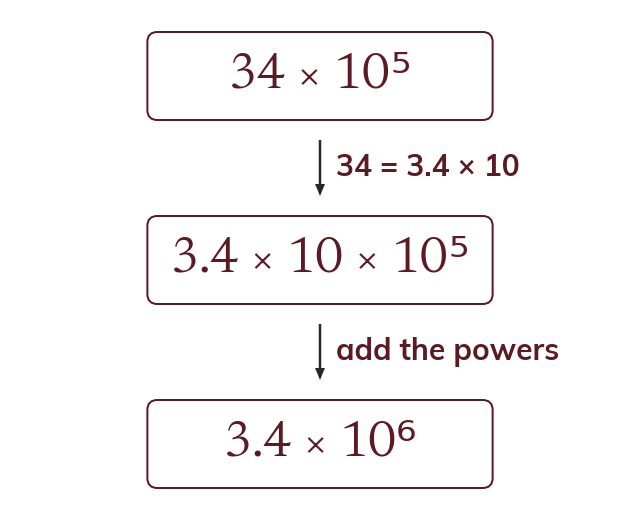

When a is 10 or more
In 34 × 10⁵, a is too big. Writing 34 as 3.4 × 10 adds one to the power. So 34 × 10⁵ = 3.4 × 10⁶.
34 × 10⁵ is not in standard form, because 34 is not less than 10. Writing 34 as 3.4 × 10 adds one to the power, so 34 × 10⁵ = 3.4 × 10⁶.